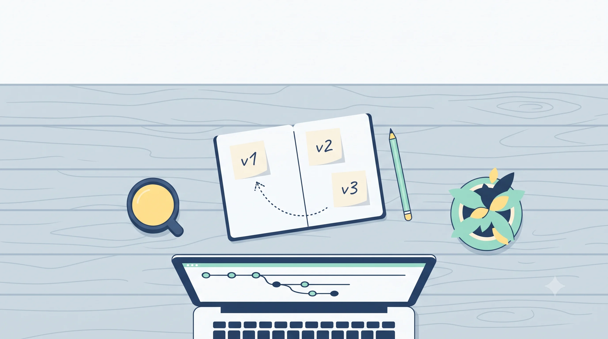
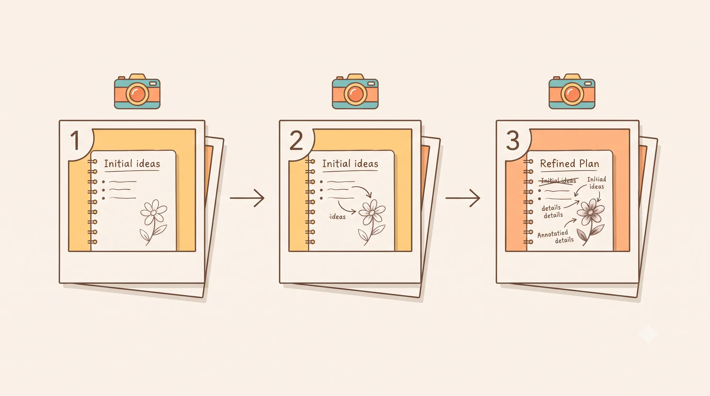
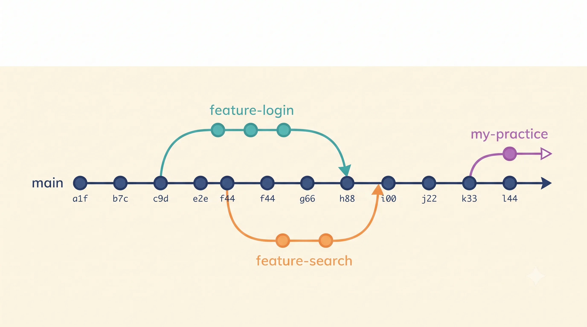
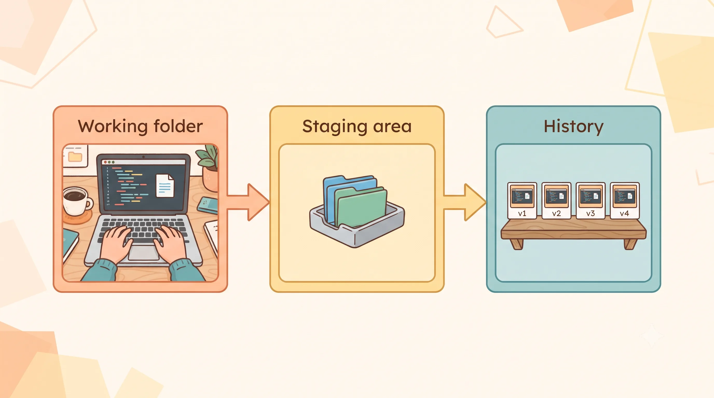

Why Did Linus Torvalds Build Git, and Why Should You Care?

You have probably saved a file as “final_v2_real_final.docx.” It works until you cannot remember which version has the bug fix. Many students do the same thing with code, and it gets messy fast.
The people who built Linux had the same problem, only much bigger.
The story behind Git
In 1991, Linus Torvalds, a student in Finland, started a small operating system kernel as a hobby. It grew into Linux. For years, developers sent their changes as patches, which are small sets of edits, through Usenet and mailing lists. Torvalds applied them to his own copy of the code by hand.
In 2002, the Linux kernel project began using BitKeeper, a commercial version control tool. In April 2005, the company behind BitKeeper revoked its free license for Linux development. The kernel community suddenly needed a new tool.
Torvalds wrote Git himself. The first commit was on April 7, 2005, and he wrote a version good enough for kernel work in about ten days. He wanted a tool that was fast, could handle huge projects, and was hard to corrupt.
Git was designed for thousands of people changing the same project. Many open source projects you use today are tracked with it.
What Git actually does
Git keeps snapshots of your project. Each snapshot is called a commit. A commit records what your files looked like at that moment, along with a message that explains why you saved it.

Git does not store a list of changes. It stores the full state of your files at each commit, and it works out the differences when you ask for them.
Problem 1: Git only tracks what you add
Many students think Git watches everything in a folder automatically. It does not. Git tracks only the files you tell it to track.
You need to add the files that belong to your project, and leave out the ones that do not, like:
node_modulesfolders, which hold downloaded packages and can be huge.envfiles, which often contain passwords or API keys- large videos or build outputs, which make your project slow to share
GitHub also blocks single files over 100 MB in normal repositories, so a large video can cause an error when you share your work.
The fix is a .gitignore file. It lists the files and folders Git should never track. Create it at the start of your project, before your first commit.
Example: your friend commits a .env file with their database password. Now the password is in the project history, even after they delete the file. A .gitignore line like .env would have stopped that.
Problem 2: Working straight on the main branch
What happens when everyone pushes to main
A branch is a separate lane for your work. You can build something new in your lane without touching the main road, which is the version everyone uses.
Now imagine two students working on the same login page. Riya changes the login button to green and pushes it to main. Pushing means sending your saved changes to the shared project. Arjun changes the same button to blue, based on his own version of the page, and pushes it too.
Git now sees two different changes to the same line. It cannot tell which one is correct, so it stops and asks someone to decide. If nobody decides, the button breaks for every user, and the team has to stop and sort it out.

How teams protect main
Teams avoid this problem with one habit: nobody works directly on main. Everyone creates a branch for each piece of work.
Sara wants to try a new payment button. She does not touch main. She creates a branch called feature-payment-button, builds the change there, and tests it on her own laptop. Then she asks a teammate to check it. Only after the check passes does the change go into main. If the button had broken something, the main version would still be safe.
Main, staging, and production
Most teams use more than one version of the project. Think of it like a restaurant kitchen.
| Branch | Plain meaning | Restaurant example |
|---|---|---|
| Main | Reviewed code that is ready to test | The recipe that the head chef has approved |
| Staging (or testing) | A copy close to the real product, where the team tries the change | A tasting session before the dish goes on the menu |
| Production | The live version real users use | The dish served to customers |
Changes move in one direction: from your branch to main, then to staging, then to production. Your college or company may use different names, like dev, test, or release. The idea stays the same: untested changes should not reach users.
Problem 3: Git is for working together, not just backup
Many people learn Git as a backup tool. That is only half of it. Git was built so that many people can change the same project, and their work can be combined later.
Imagine a group project without Git. Riya makes changes to the report and sends the whole file by email. Arjun also edits the file and sends his copy. Now there are three versions, and someone has to copy and paste changes by hand. Mistakes happen, and someone’s work gets lost.
With Git, each person has a full copy of the project and its history. Riya commits her change and shares it. Arjun pulls her change into his copy, then adds his own. Git keeps both histories, and when two people change the same line, it stops and asks someone to decide which version to keep.
This is how open source works. Thousands of people send changes to projects they do not own, and Git keeps the history clear enough for maintainers to review.
Problem 4: Vague commit messages
A commit message explains why you saved a change. Compare these messages:
updateupdate home pagefix login button crash on small screens
The first one tells you nothing. The second one is a little better, but it still does not say what changed on the home page. The third one tells you the problem and where it happened.
A good habit is to write the first line as a short sentence in the present tense, like “fix login button crash.” Keep it short, and add more detail below if needed.
Branch names can follow a similar pattern. A name like fix/login-button-crash tells your team what the branch is for before they even open it.
Look at your last commit message. Would a stranger understand it? If not, rewrite it with git commit --amend.
Problem 5: Memorizing commands instead of understanding them
Many beginners copy commands from a video. The command works once, and when something goes wrong, they have no idea what to do.
Understanding the model helps more than memorizing. Git has three places to know about:
- Your working folder: the files you are editing right now.
- The staging area: the files you have chosen to save next.
- The history: the commits you have already saved.
git status tells you which place each file is in. Reading its output is one of the best ways to learn Git.

Here is a short cheat sheet for the commands in this blog:
| Command | What it does | When you use it |
|---|---|---|
git --version |
Shows the installed Git version | To check Git is installed |
git init |
Starts tracking a folder | Once, at the start of a new project |
git status |
Shows which files are changed, staged, or untracked | Any time you are not sure what is going on |
git add <file> |
Moves a file into the staging area | Before a commit, to choose what to save |
git commit -m "message" |
Saves the staged files as a commit with a message | When a piece of work is ready to save |
git commit --amend |
Changes the last commit’s message or adds files to it | Right after a mistake in your last commit |
git log |
Lists saved commits, newest first | To see the history of your project |
git branch |
Lists branches and marks the current one | To check which branch you are on |
git switch -c <name> |
Creates a new branch and switches to it | Before starting a new piece of work |
git switch <name> |
Switches to an existing branch | To go back to another line of work |
Run this in a test folder, then change the file and run it again:
git init # start tracking this folder
git add notes.txt # choose which change to save
git commit -m "add first notes" # save a snapshot with a message
git log # see your saved snapshots
Why this still matters
Git was built because thousands of people needed to change the same code without losing track of who did what. That problem has not gone away. It just happens in a student club, a team project, or an open source repository.
The habits in this blog are small: add only what belongs, use a branch for each piece of work, write clear messages, and understand the three places Git uses. Each one protects the people around you, not only yourself.
your task for today
Install Git if you do not have it, open a terminal, and run git --version. If you see a version number, create a test folder, add one file, and make one commit with a clear message.
Next blog: GitHub. You will see how a branch becomes a proposed change that the project’s maintainers can review ✱